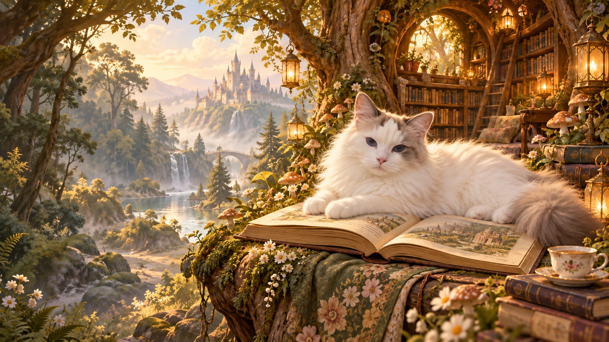

A SHELF OF OTHER WORLDS
小說書架
不同的故事，在同一片森林裡相遇。
封面先替故事留了位置。正文整理好後，就在這裡翻開。
THE CAT BEHIND THE FAIRY TALE
小軟的日常
本貓的日常，添一點水彩與童話。
不趕進度，只負責把日子過得很軟。
THE KEEPER OF THIS LITTLE FOREST
我是 Beauty，
這裡由小軟看守。
把想到的故事寫下來，把喜歡的日常留下來。
小說、遊戲、AI，還有一隻經常占據電腦主機架的貓。
森林管理員 · 小軟
「書可以翻，
我的位置不能搶。」